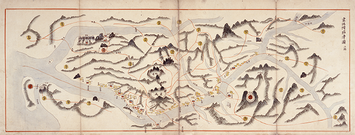
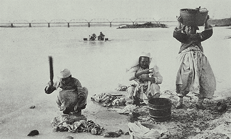
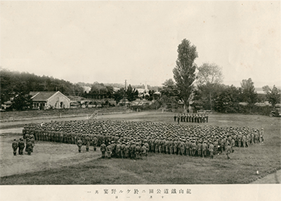
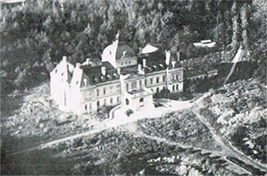
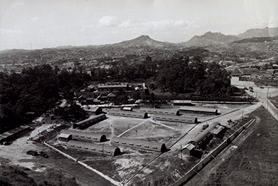
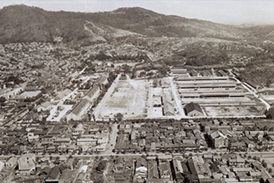
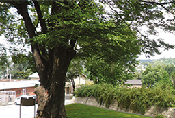
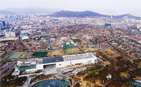
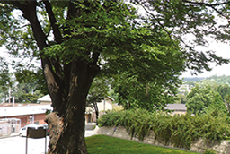

- 2017 디지털 전시
용산,
금단의 땅을
전傳하다.- 1948년 31보병연대 32보병연대 일대 (현 전쟁기념관) 항공사진_미국국립기록보존소
- 용산기지는
제국주의와 냉전 유산의 상징이자
인류가 더 이상 같은 실수를 되풀이하지 않기 위해 보존해야 할 가치가 큰 유산입니다.
‘용산, 금단의 땅을 전하다’ 전시를 통해 용산기지가 전해주는 공생, 평화, 인권 등 인류 보편적인 가치에 대해 생각해 보는 계기가 되었으면 합니다.
20세기의 굴곡진 역사를 넘어 새로운 희망의 싹을
틔울 수 있는 용산공원을 상상해보며,
곧 우리의 품으로 돌아올 용산기지를 전傳합니다. - In the middle of prosperous South Korea’s capital, Seoul, there sits a forbidden land for the last 100 years called Yongsan Garrison. This military base captures both imperialism and cold war ideologies which were once pervasive around the world, and for Koreans, this land is a reminder of painful history like Japanese colonial period, wars and the divided nation. Through reflecting on the tumultuous 20th century history of Yongsan, this exhibition hopes to provide a glimmer of hope for Yongsan Garrison and imagine the future Yongsan Park which will be soon returned to the hearts of all Koreans.
[1]
삶의 터전,
용산
-
조선시대에 기록된 옛 지도를 보면, 인왕산 무악재에서 뻗은 산자락 끝에서 용산의 지명을 확인할 수 있다. 조선시대 사람들은 한강과 남산, 그리고 만초천과 같은 자연경관에 둘러싸인 용산을 생활의 터전으로 삼아왔다.
-

동국여도경강부임진도 19세기 전반
서울대학교 규장각 소장
-
용산은 조선의 수도인 한성과 전국을 이어주는 주요 결절점으로서 사람이 모이는 곳이자 물류의 중심지였으며, 전쟁 때는 전략 요충지였다.
[1]전시 페이지 세부 보기 -

용산의 한강변 겨울 빨래출처 - 사진으로보는 서울
- 석재운반
- _ 서울시립대학교박물관 소장
[2]
식민 지배의 산실, 용산
-
조선 정부는 1881년에 창설한 별기군에게 특혜를 주는데 반해 구식군대를 멸시하여 임오군란(1882년)이 일어났다.
일본은 이를 계기로 인천 제물포에 1,200명의 군대를 파견하고, 호위 병력을 서울 남산 아래에 주둔시켰다. 이는 임진왜란 이후 한성에 일본군이 주둔하게 된 첫 사례이다.
일본은 러시아와의 전쟁을 위해 조선 땅에 군부대를 설치한다는 내용이 포함된 한일의정서(1904년)를 체결했다. 이후 러일전쟁에서 승리한 일본은 을사늑약을 체결하고, 용산을 비롯한 전국에서 영구병영을 설치하기 시작했다. -

사단대항연습사진첩출처 - 민족문제연구소 소장
-
한일의정서 제 4조
[2]전시 페이지 세부 보기
일본 정부는 전항의 목적을 달성하기 위하여 군사상 필요한 지점을 임기수용(任機收用) 할 수 있음. -

용산총독관저 항공사진출처 - 일본지리풍속대계(1930) 수록
[3]
냉전의 최전초 기지, 용산
-
한반도는 1945년 일본군의 항복으로 해방되었지만, 북위 38도 선을 경계로 이북지역은 소련군이, 이남지역은 미군이 각각 일본군의 항복을 접수했다.
조선 총독은 1945년 9월 9일, 미군 제24군단에 정식으로 항복했다. 제17방면군사령부가 용산을 떠나면서 일본군의 용산기지 역사는 마무리된다. 대신 용산기지를 접수한 미군은 이곳을 ‘캠프 서빙고 (Camp Seobinggo)’라 명명했다. -

미7사단 위수감옥 & 미7사단 헌병소대의 박사와 수송반출처 - 1948년 미국 국립문서보관청(NARA) 소장
-

미7사단 포병대(現 용산기지 캠프 코이너)일대출처 - 1948년 미국 국립문서보관청(NARA) 소장
- [3]전시 페이지 세부 보기
[4]
숙제의 땅, 용산
-
1957년, 일본 동경에 주둔했던
유엔군사령부(UNC)가 용산기지로 이동하여
주한미군사령부(USFK)를 창설했다.
1978년에는 한미연합사령부(CFC)가 창설되면서
용산기지는 한미 군사동맹의 상징적인
장소로 변모했다. -
-

수령 2000년이 넘은 느티나무용산문화공원(김천수)
-

용산미군기지 전경국토교통부
-

-
현재 용산기지는 3개 지역(메인 포스트, 사우스 포스트, 캠프 코이너)으로 구분된다. 메인 포스트는 주로 미군 근무지(주한미군사령부, 한미연합사령부 등), 사우스 포스트에는 주거시설을 비롯한 병원 및 편의시설, 캠프 코이너에는 지원시설이 있다.
한미 상호보호조약 제4조
상호적 합의에 의하여 미합중국의 육군, 해군과 공군을 대한민국의 영토 내와 그 부근에 배치하는 권리를 대한민국은 이를 허여(許與)하고 미합중국은 이를 수리한다 - [4]전시 페이지 세부 보기
- 용산천 연결다리
- _ 국토교통부